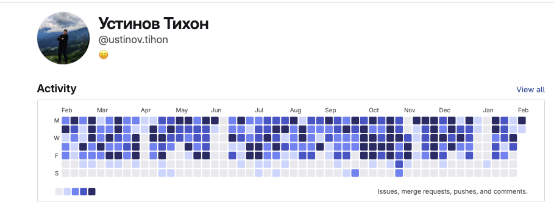

Tech Lead · Compose Multiplatform, Kotlin Multiplatform (Android/iOS) · Москва
Compose MultiplatformKotlin MultiplatformKotlin · KtorNode.js · TypeScriptPostgreSQLИИ (в изучении)
100k+установок приложения
4.8 ★рейтинг Google Play
2статьи на Habr
Рабочее приложение
NDA
Мобильное приложение для сотрудников пунктов выдачи заказов (Android и iOS). Руковожу разработкой. Настраивал CI/CD: сборка и подпись в пайплайне, публикация в магазины приложений. Удобный интерфейс, работа при ограниченной связи.
Tech Lead, основной опыт — Kotlin, Kotlin Multiplatform и Compose Multiplatform: один код для Android и iOS. Руковожу разработкой мобильного приложения (NDA); приложение в проде.
Рост:
Сейчас · Tech Lead (Senior KMP) · мобильное приложение (NDA)
Tech Lead · KMP-SDK, ЕПК (Ростелеком ИТ)
Раньше · Frontend (Vue)
Боты на Kotlin + PostgreSQL (git-notifier) и на Node.js/TypeScript (Tag Their Bot, Work Network), ВидеоМем Бот (есть версии на Kotlin и на Go), Chrome-расширения, бэкенды. Для разных задач выбираю подходящий инструмент.
Большинство проектов на GitHub — приватные, поэтому часть активности и репозиториев не отображается в профиле.
Активность в рабочем GitLab (RWB)

График активности за год: issues, merge requests, pushes, комментарии (hosted GitLab RWB).
Сейчас интересуюсь и изучаю ИИ для оптимизации рутинных задач, анализа, исследований и повышения производительности — с грамотным подходом, с бэкграундом, не тяп-ляп.
Стек (по релевантности)
БД: PostgreSQL, Realm, Room, YDB, ClickHouse. Опыт: консоли магазинов приложений (Google Play Console, App Store Connect, RuStore, AppGallery) — настраивал и делал публикацию приложений; Firebase; краш-аналитика в Sentry, Google Console (Crashlytics), Xcode Organizer; поиск утечек памяти; дашборды в Redash; работа с Kibana.
Избранные проекты
YouTrack Status Tools
Chrome-расширение: статусы и поля задач из YouTrack API, настраиваемые колонки, копирование в Google Sheets.
База мем-видео, быстрый поиск, inline-режим в любом чате (@video_easily_bot <запрос>), пополнение базы пользователями. Есть две реализации: на Kotlin (Ktor) и на Go.
Mobile app for pickup-point staff (Android and iOS). I lead development. Set up CI/CD: build and signing in the pipeline, publishing to stores. Clear UI, works with limited connectivity.
Tech Lead. Main focus: Kotlin, Kotlin Multiplatform, Compose Multiplatform — one codebase for Android and iOS. I lead development of a mobile app (NDA); the app is in production.
Growth:
Now · Tech Lead (Senior KMP) · mobile app (NDA)
Tech Lead · KMP SDK, ЕПК (Rostelecom IT)
Earlier · Frontend (Vue)
Bots in Kotlin + PostgreSQL (git-notifier) and Node.js/TypeScript (Tag Their Bot, Work Network); video_easily_bot (Kotlin and Go versions), Chrome extensions, backends. I pick the right tool for the job.
Most GitHub projects are private, so part of the activity and repos is not visible.